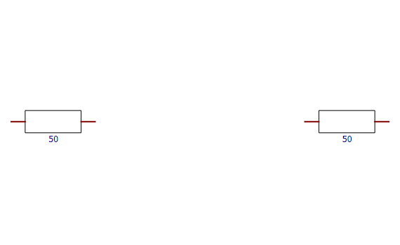
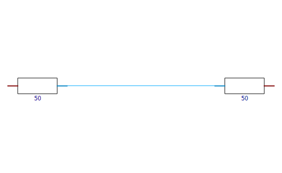
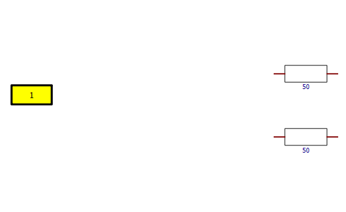
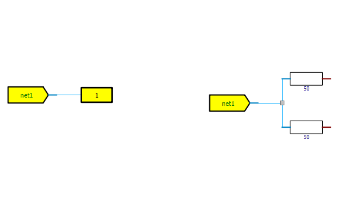

| CST Studio Suite 2026 |
|

Object refering to the electrical connection topology on the schematic. Use this object to query or manipulate the connection topology.
This simple example should help to understand how the net command is used. It shows how a connection between two resistors is created.
Every electrical net is based on componentports which need to be defined before creating a new connection.
|
 |
 |
'First we define the array which contains all componentports that should be connected to each other.
'VBA-arrays are zero based. This array has two dimensions with the size 2 and 3:
Dim Componentports(1,2) As Variant
'Each componentport contains the component-type
Componentports(0,0) = "Block"
'the name as shown in the Navigation Tree
Componentports(0,1) = "RES1"
'and the port index.
'Be aware that the portindex does not correspond to the pinname shown on the schematic
Componentports(0,2) = 1
'Now we define the second componentport
Componentports(1,0) = "Block"
Componentports(1,1) = "RES2"
Componentports(1,2) = 0
With Net
.Reset
.AddComponentPorts("",Componentports,False)
.Apply
End With
Componentports are electrical connection end points (usually a pin of a block can be represented by a componentport).
The Net command allows creating electrical connection topologies by defining which componentports should be connected to each other.
A ComponentPort is made up of three entries the componenttype the componentname and the portindex.
Single ComponentPort
In the VBA context a single ComponentPort is an one dimensional variant_array with the size 3 consisting of the two strings and an integer.
The first entry defines the componenttype which is defined by a case insensitive string. The second entry the componentname and the last entry defines the port (using the portindex) of the component.
|
Component |
componenttype |
componentname |
portindex |
|---|---|---|---|
|
Block |
"Block" |
Name of the block as displayed in the tree. |
Portindex as displayed in the layout-widget. Alternatively the portindex can also be retrieved using the Blockcommand .GetPortIndex. |
|
External Port |
"Externalport" |
Name of the external port as displayed in the tree. |
Portindex of an external port is always 0, and 1 for the differential port. For the special case of external bus ports use ConnectPins (see examples). |
|
Probe |
"Probe" |
Name of the probe as displayed in the tree. |
Non-bus-probes are referenced by the portindices 0 and 1. For bus-probes use ConnectPins (see examples). |
ComponentPort Array
An array of ComponentPorts is a two dimensional variant_array and referenced in the methods as componentports .
Apply
Applies all accumulated changes to the electrical connection topology to the schematic.
Reset
Gets the current connection topology of the schematic and resets all accumulated changes that have not been applied, yet.
DoesExist ( name netname ) bool
Returns True if a net with netname exists.
GetNetName ( variant_array componentport ) string
Returns the netname of the net the given componentport is part of. If it is not connected an empty string is returned.
GetNetNameByIndex ( int netIndex ) string
Returns the netname of the net by the given index. If the given index is smaller than 0 or does not exist an empty string is returned.
GetNumberOfNets () int
Returns the number of all nets in the schematic.
GetNumberOfSubnets ( name netname) int
Returns the number of subnets the given net consists of.
GetSubnetIndex ( variant_array componentport ) int
Returns the subnetindex the componentport is part of. If it is not part of any net -1 is returned.
GetComponentPorts( name netname, int subnetindex ) variant_array
Returns all componentports which are part of the specific subnet of the given net. If subnetindex is -1 componentports of the whole net are returned.
Delete( name netname )
Deletes the electrical net with given netname.
AddComponentPorts( name netname, variant_array componentports, bool createNewSubnet ) string
Adds all given componentports to the electrical net with name: netname. If netname contains an empty string a new net is created.
If createNewSubnet is True the given componentports will be graphically split in its own subnet with a connection label attached.
Adding componentports which are already part of another net, always removes them from their original net and adds them to the currently used one.
Returns the netname of the currently processed net, in case a new one got created a new name is generated and returned.
AddToSubnet( variant_array componentports, name netname, int subnetindex ) bool
Adds componentports to the given netname/subnetindex combination. Returns True if connections were created.
RemoveComponentPorts( variant_array componentports, name netname )
Removes componentports from any net
MergeSubNets( name netname )
Deletes all connection labels of given net and directly connects all componentports of it.
Rename( name oldnetname, name newnetname )
Renames the net with oldnetname into newnetname.
ShowNetNameLabel( name netname, bool showLabel )
Adds a conncetion label to the given net if showLabel is True.
(Only relevant for nets with a single subnet, all nets consisting of more than one subnet already have connection labels attached to them)
ConnectPins( variant_array componentpins )
Establishes bus-connection of two unconnected componentpins.
RemoveConnection( variant_array componentpins )
Removes the connection (if any) between the given componentpins.
'Connect two blocks with an external port via connection label.
|
 |
 |
'VBA arrays are zero-based. Subnet1 contains 2 componentports and Subnet2 1.
Dim Subnet1(1,2) As Variant
Dim Subnet2(0,2) As Variant
Dim GeneratedNetName As String
'First Block componentport
Subnet1(0,0) = "BLOCK"
Subnet1(0,1) = "RES2"
Subnet1(0,2) = 0
'Second Block comoponentport
Subnet1(1,0) = "BLOCK"
Subnet1(1,1) = "RES1"
Subnet1(1,2) = 0
'External Port componentport
Subnet2(0,0) = "EXTERNALPORT"
Subnet2(0,1) = "1"
Subnet2(0,2) = 0
With Net
.Reset
'Create first subnet, new net is generated and netname returned.
GeneratedNetName = .AddComponentPorts("", Subnet1, False)
'Add a second subnet containing the external port with name "1"
.AddComponentPorts(GeneratedNetName, Subnet2, True)
.Apply
End With
Dim ComponentPins(1,2) As Variant
'First Block componentpin (now we need the pin-index)
Subnet1(0,0) = "BLOCK"
Subnet1(0,1) = "MWSSCHEM1"
Subnet1(0,2) = 0
'Second ExternalPort comoponentpin
'The buspin has always the pinindex 0, and the differential pin always 1.
Subnet1(1,0) = "EXTERNALPORT"
Subnet1(1,1) = "BusPort1"
Subnet1(1,2) = 0
With Net
.Reset
.ConnectPins(ComponentPins)
.Apply
End With
'Using built-in "Array"-function to define componentports
Dim test As Variant
test = Array(Array("B", "RES1", 1), Array("B", "RES2", 0), Array("B", "RES3", 0))
With Net
.Reset
.AddComponentPorts("", test, False)
.AddComponentPorts("", Array(Array("B", "RES1", 0), Array("B", "RES3", 1)), False)
.Apply
End With
| CST Studio Suite 2026 |
|